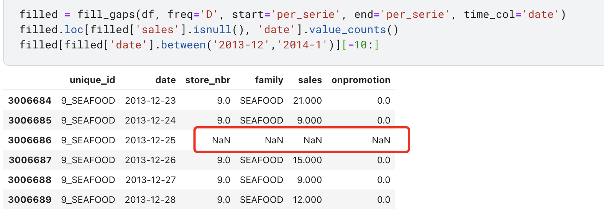
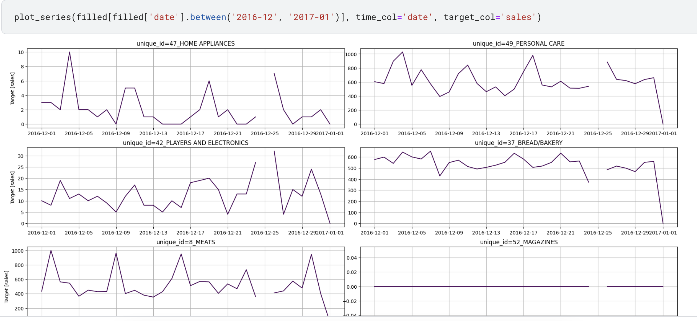
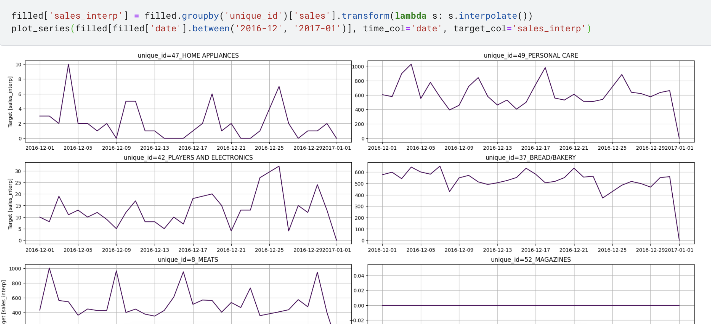

继续往后看,发现有另一个时序处理的package,MLforcast,抱着学习的心态看一看用法.
preprocessing
首先import需求包并读取数据. 1
2
3
4
5
6
7
8
9
10
11
12
13
14
15import lightgbm as lgb
import numpy as np
import pandas as pd
from mlforecast import MLForecast
from mlforecast.lag_transforms import ExpandingMean, RollingMean
from mlforecast.target_transforms import GlobalSklearnTransformer
from sklearn.preprocessing import FunctionTransformer
from utilsforecast.feature_engineering import fourier
from utilsforecast.preprocessing import fill_gaps
from utilsforecast.plotting import plot_series
df = pd.read_csv('../input/store-sales-time-series-forecasting/train.csv', parse_dates=['date'])
df = df.drop(columns='id')
df['unique_id'] = df['store_nbr'].astype(str) + '_' + df['family']
df.head()
然后这里可以使用utilsforcast.preprocessing.fillgaps来填补时间空缺,
空缺时间会导致其他列被填na. 1
2
3
4
5
6
7
8filled = fill_gaps(df, freq='D', start='per_serie', end='per_serie', time_col='date')
filled.loc[filled['sales'].isnull(), 'date'].value_counts()
# date
# 2013-12-25 1782
# 2014-12-25 1782
# 2015-12-25 1782
# 2016-12-25 1782
# Name: count, dtype: int64

可以使用plot_series来简单画图,需要指定time_col和target_col.
1
plot_series(filled[filled['date'].between('2016-12', '2017-01')], time_col='date', target_col='sales')
需要注意这里其实id_col被默认指定为了unique_id.

可以看到25号的时候数据为空,使用interpolate来进行填充
1
2filled['sales_interp'] = filled.groupby('unique_id')['sales'].transform(lambda s: s.interpolate())
plot_series(filled[filled['date'].between('2016-12', '2017-01')], time_col='date', target_col='sales_interp')

然后指定一下categorical_feature
1 | cat_features = ['store_nbr', 'family'] |
holiday部分不同上一次的one-hot-encoding,这里我们仅判断是否为节日
1 | raw_holidays = pd.read_csv( |
填补oilprice,并且完成表合并 1
2
3
4
5
6
7
8
9
10
11
12
13
14
15
16
17oil = pd.read_csv(
'../input/store-sales-time-series-forecasting/oil.csv',
parse_dates=['date'],
)
filled_oil = oil.set_index('date').reindex(pd.date_range(oil['date'].min(), oil['date'].max(), freq='D', name='date'))
filled_oil = filled_oil.interpolate(limit_direction='both').reset_index()
filled_oil.head()
def assemble_df(df, holidays, oil):
df = df.merge(holidays, on='date', how='left').merge(oil, on='date', how='left')
df[['is_holiday', 'is_work_day']] = df[['is_holiday', 'is_work_day']].fillna(0)
return df
train = assemble_df(filled.drop(columns=['sales', 'onpromotion']), holidays, filled_oil)
train.head()
MLForecast Model
1 | %%time |
这里直接用了lag1的ExpandMean以及7和14的lag和14,28的window的rollingmean. 另外单独的lag被指定在了lags里面.
1 | class RollingMean |
basemodel用的是lgb.LGBMRegressor
prediction
处理数据喂mlf即可, 后面不做多的分析了.
1 | test = pd.read_csv('../input/store-sales-time-series-forecasting/test.csv', parse_dates=['date']) |